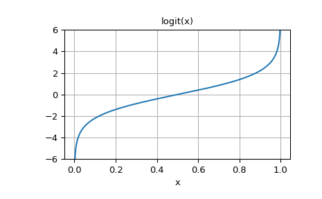

scipy.special.logit¶
-
scipy.special.logit(x) = <ufunc 'logit'>¶ Logit ufunc for ndarrays.
The logit function is defined as logit(p) = log(p/(1-p)). Note that logit(0) = -inf, logit(1) = inf, and logit(p) for p<0 or p>1 yields nan.
- Parameters
- xndarray
The ndarray to apply logit to element-wise.
- Returns
- outndarray
An ndarray of the same shape as x. Its entries are logit of the corresponding entry of x.
See also
Notes
As a ufunc logit takes a number of optional keyword arguments. For more information see ufuncs
New in version 0.10.0.
Examples
>>> from scipy.special import logit, expit
>>> logit([0, 0.25, 0.5, 0.75, 1]) array([ -inf, -1.09861229, 0. , 1.09861229, inf])
expitis the inverse oflogit:>>> expit(logit([0.1, 0.75, 0.999])) array([ 0.1 , 0.75 , 0.999])
Plot logit(x) for x in [0, 1]:
>>> import matplotlib.pyplot as plt >>> x = np.linspace(0, 1, 501) >>> y = logit(x) >>> plt.plot(x, y) >>> plt.grid() >>> plt.ylim(-6, 6) >>> plt.xlabel('x') >>> plt.title('logit(x)') >>> plt.show()
